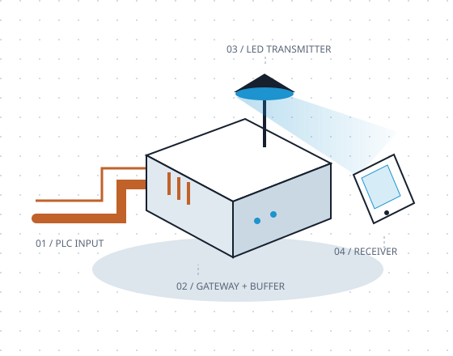

POWER LINE COMMUNICATION × VISIBLE LIGHT COMMUNICATION
THE SIGNAL JOURNEYProject illustration

Carried by copperDelivered by light
01 / THE PROJECT
Existing wires. A small buffer. A different last hop.
↘
THE PROBLEM & OUR APPROACH
A bridge between wires and light.
Our prototype explores a practical question: can existing power wiring feed a local light-based data link, with a buffer managing the handoff?
THE PURPOSE
Use the room’s existing paths.
PLC brings data through mains wiring to a gateway. An LED then carries the data across a local optical link to a photodiode receiver. Combining them gives us a wired backhaul and a visible-light last hop to study, without running a separate data cable along the PLC path.
THE CHALLENGE
The two links don’t keep the same pace.
PLC can deliver data in bursts or pause under interference. The optical transmitter has its own limited rate. A direct handoff can lose a burst that arrives faster than it can be sent, or leave the light link with nothing to send during a gap.
OUR SOLUTION
Store briefly. Send steadily.
A finite buffer holds arriving data until the VLC transmitter is ready. It absorbs short bursts and can keep the transmitter supplied through a brief PLC pause, while queued data remains. Pacing and feedback are still needed when input stays faster than output.
Try the handoff
Step-by-step illustration
Compare a six-packet burst with and without storage. Each step represents a VLC opportunity to send up to two packets; these are teaching units, not measured hardware rates.
PLC INPUTReadyBursts or pauses
Gateway buffer0 / 8 packets
Eight illustrative storage slots
VLC OUTPUT0 sentUp to 2 per step
Send a burst to see the gateway hold data while the light link sends at its own pace.
0 packets lost
A buffer buys time; it does not increase VLC capacity, remove electrical interference, or cover an indefinite outage. Once storage fills, excess input is lost in this model. In the real system, backpressure or retries must be handled by the transport and gateway.
PLC equipment, gateway, LED transmitter, and complete setup photographs are awaiting team contributions.
02 / THE BUFFER CHALLENGE
Keep the picture. Lose the waiting.
Protect the image without leaving too much data waiting. Three challenges. One shared scoreboard.
60-second buffer challenge
Illustrative model
Your nickname and scores appear online after three attempts. Use a nickname rather than contact details.
Practice first, or enter a nickname to play the same calm, busy and harsh challenges as everyone else.
PLC outageBuffer fillCapacityOverflow
–Overflow loss
–Peak fill
–FIFO queue delay bound
–Longest PLC outage
Original imageAfter the simulated link
Sample crest: Wits University. Tile removal illustrates missing data; this is not an actual transmission of the crest.
How your score works
Each attempt starts at 1,000 points. Subtract 20 points per percentage point of data unavailable at 60 seconds, and 100 points per second of peak FIFO queue delay. Scores stop at zero. Your ranked score is the rounded average of all three attempts. Your best complete round per nickname is ranked; earlier-started completed rounds break ties.
Everyone uses the same deterministic traces. The server recalculates results from your buffer choices. Overflow and data still waiting at the deadline count toward missing image tiles. Queue delay is estimated from peak queued data ÷ optical drain rate; a larger empty buffer does not inherently slow the link.
60 model seconds play in about 10 seconds on screen. Teaching rates: source 10 kB/s, PLC bursts 40 kB/s, optical drain 12.5 kB/s. These are not measured project rates. The game never controls the rig.
Shared online scoreboard
Loading the shared scoreboard…
Average of three server-calculated attempts
Rank
Nickname
Average
Calm
Busy
Harsh
03 / WHAT THE PROJECT TEACHES US
A smarter handoff. A steadier experience.
A reusable gateway for IoT: combine two imperfect links, control the handoff, and keep data moving predictably.
Fixed distanceClear line of sightStable brightness
A fixed installation lets us control these conditions. Receiver filtering and AC-coupling design can reduce unwanted noise; improvements still need measured validation.
⇄
Make the buffer a controller
The VLC transmitter reports buffer status. The PLC producer uses that feedback to pace input before the FIFO overflows.
Status reports guide pacing; they are not optical delivery acknowledgements. Detecting corrupted data requires checksums and retries.
≋
Balance resilience and delay
Electrical loads can disturb PLC, causing outages or corrupted data. A small FIFO can overflow; a larger queue takes longer to drain.
Small Less headroomOptimised Enough reserveLarge queue More waiting
Size the reserve for measured PLC interruptions under heavy loads: required queued data ≈ VLC drain rate × outage duration. Finite storage cannot cover every outage or repair noise-corrupted packets.
RECORDED TESTS / 12 OCTOBER 2026
Evidence, at a glance.
Two views from the actual test and dashboard files. Tap the plots to inspect them.
Image source: text_image_vlc_demo/tests/highres_live_acceptance.json. FIFO source: vlc_150khz_test/dashboard/results/20261012_174423_6c2ab0/metrics.csv, first 120 seconds with reported occupancy. Repeated values may be dashboard snapshots. This is not a controlled outage sweep or proof of a particular throttle policy.
A separate USB-injected FIFO test at 250,000 bit/s queued 85,800 bytes and drained in 3.485 s. The observed receiver sequence span contained 1,525 valid packets and no internal sequence gaps; initial calibration packets were excluded. This was not physical PLC ingress or website-to-rig validation.
The buffer feedback protocol reports used/free space periodically and supports sender pacing. Reserve sizing should be verified against recorded PLC outage durations; these extracts do not establish the worst-case outage. Filtering is a performance option, not a guarantee. These are historical bench results, not live telemetry.
04 / MAKE IT YOURS
Words. Pixels. A sketch. Start with a message.
Prepare something on your phone, preview what the receiver will see, and explore the transmission journey.